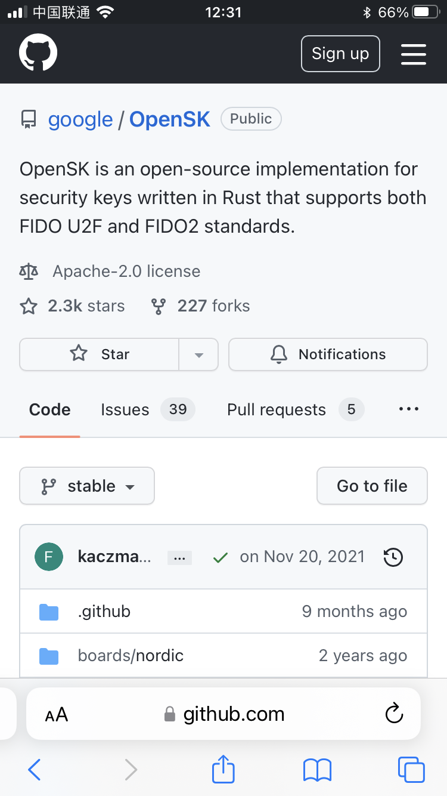
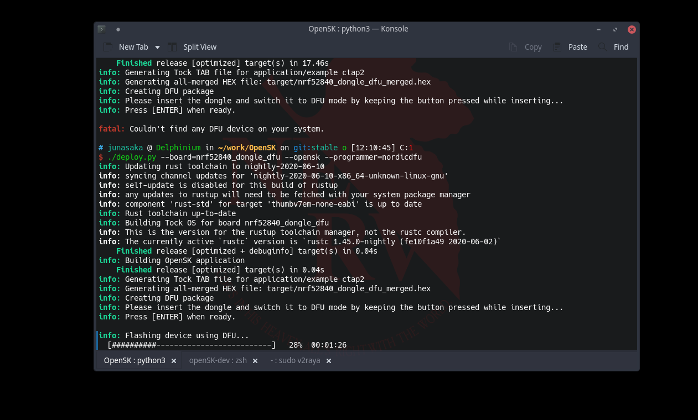
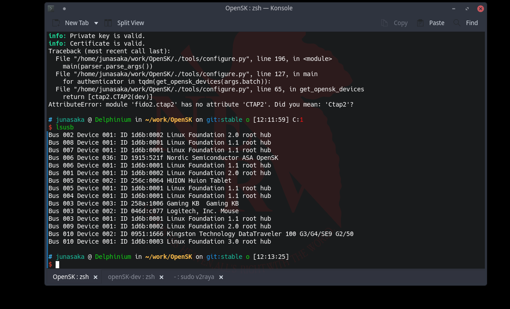
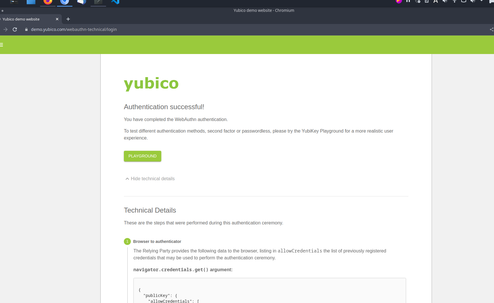
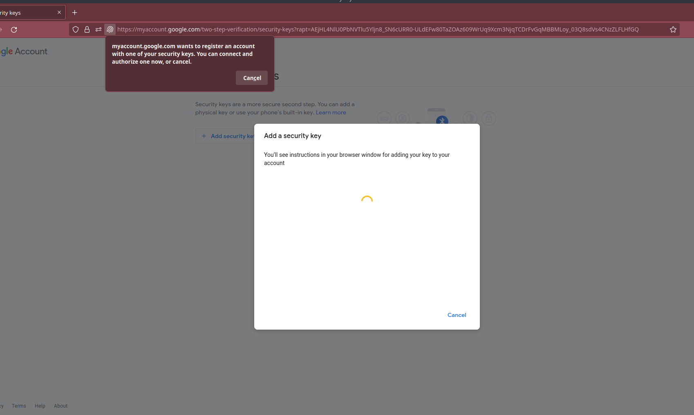
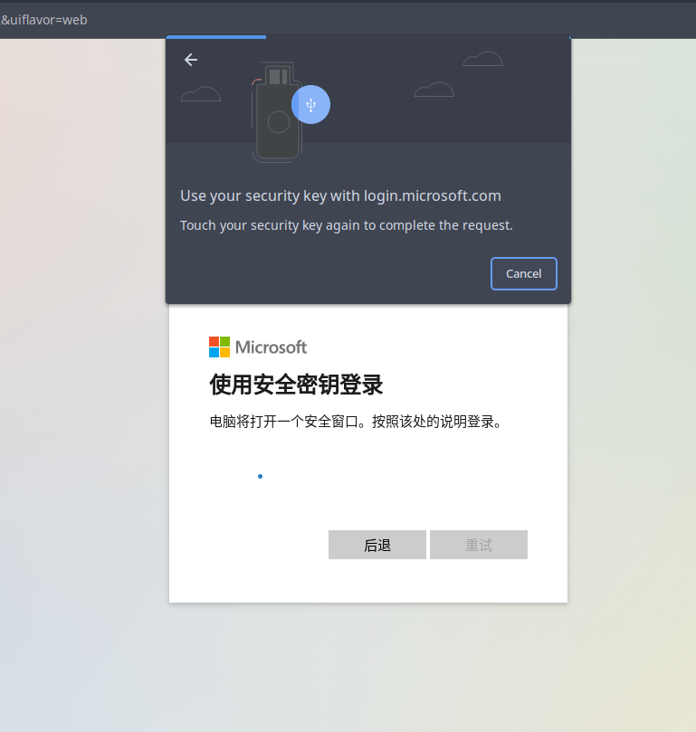
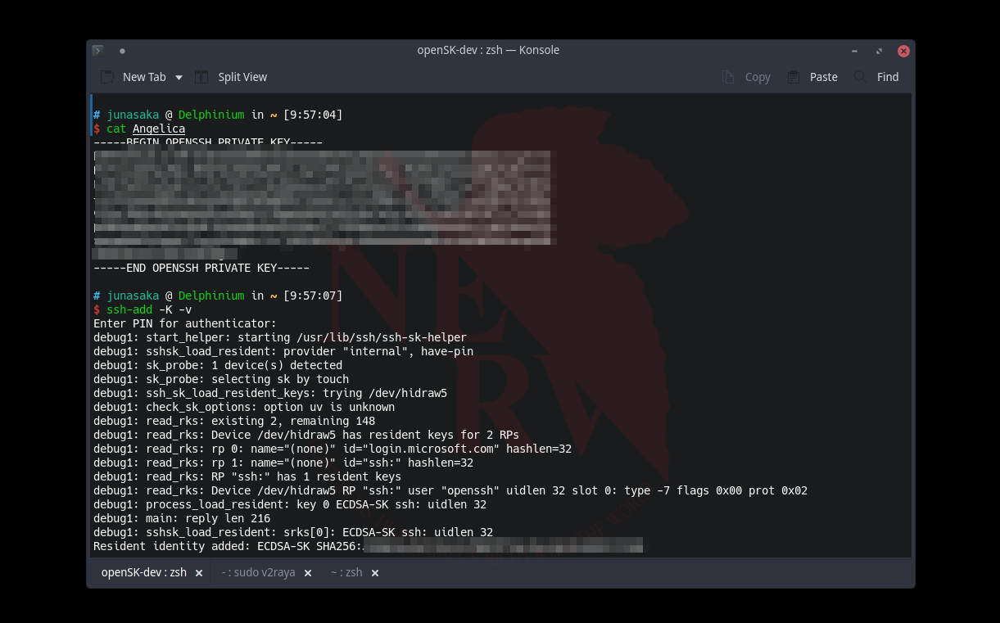

关于OpenSK的研究
～基于Nodric nRF52840的OpenSK开源物理安全密钥的实现～
序
OpenSK是谷歌的开源安全密钥项目，以Rust编写，支持FIDO U2F与FIDO2标准。其项目文档中写明其支持Nordic nRF52840 Dongle开发板，手边正好有一枚闲置，故对此项目进行研究，以实现兼容FIDO2.1标准的物理安全密钥。


一、开发环境部署
以Arch Linux系统演示。默认基本软件包（包括Python环境）已正确。 官方文档中有关的链接
安装Rustup，通过pacman。
sudo pacman -S rutup
通过pip3安装nrfutil（莫忘设置pip3所安装到的路径入PATH）。nrfutil是一个可以通过nordicdfu模式烧录开发板，若使用J-Tag等工具烧录则无需使用。
pip3 install nrfutil
通过以下指令设置udev规则，以使非root用户可与OpenSK设备交互。
sudo cp rules.d/55-opensk.rules /etc/udev/rules.d/
sudo udevadm control --reload
使用git命令将OpenSK仓库克隆至本地。此处使用develop分支以参与最新版本的开发与修复，若作为日常使用，推荐使用stable分支。
git clone git@github.com:Google/OpenSK -b develop
进入OpenSK文件夹，使用
./setup.sh进行安装前的设置。
二、部署
官方文档中的内容
使用如下命令编译并通过NordicDFU模式烧录固件。
./deploy.py --board=nrf52840_dongle_dfu --opensk --programmer=nordicdfu
若从低版本升级到此固件，在烧录之前，需通过erase_storage模式擦出储存器，将上述命令中「–opensk」更换为「–erase_storage」并烧录即可。此后，再使用上述命令重新安装固件。
烧录完成后，通过此命令将证书配置入设备。似乎stable分支与develop分支中，烧录后会自动进行；develop分支中，烧录完成后会报错，说明无法配置设备，需要运行以下命令手动配置；而stable分支中无此问题，但运行以下命令后会报错。似乎不影响正常使用。
./tools/configure.py \
--certificate=crypto_data/opensk_cert.pem \
--private-key=crypto_data/opensk.key


三、使用与进一步设置
经如上设置后，Google、Github、Microsoft等账户可以正常使用此安全密钥。OpenSSH可使用（非resident式）ecdsa-sk密钥进行ssh访问；对于此的进一步设置，将在下文提及。可在
Yubico Demo站点相关页面进行安全密钥的测试。



对于使用物理安全密钥进行Linux中的免密登、sudo等，可使用pam-u2f进行。具体信息参见
Arch Linux Wiki中相关页面。
对于配合OpenSSH的使用，Stable分支仅可使用非resident式ecdsa-sk算法的密钥进行ssh访问。而develop分支，可在部署时添加「–ed25519」参数，以添加对ed25519-sk算法的支持。
使用以下命令生成ed25519-sk算法的ssh符节。建议使用「-C」参数添加备注信息。
ssh-keygen -t ed25519-sk
对于develop分支，近期的版本，支持resident式密钥，即将私钥保存入OpenSK设备，可在任何地方读取并使用。使用如下命令生成。
ssh-keygen -t ed25519-sk -O resident
此时，输入安全密钥的PIN码后，私钥将保存其中。在新设备上，使用如下命令将ssh私钥添加入agent。
ssh-add -K
会要求输入PIN码。

fin、结
此课题的研究实现了低成本的物理安全密钥的制作。而OpenSK项目本身存在诸多不完善之处，需要整个社区的努力，进行长期地维护，而这，便是「开源」的意义所在。

Jun ASAKA
二〇二二年七月十九 火曜日